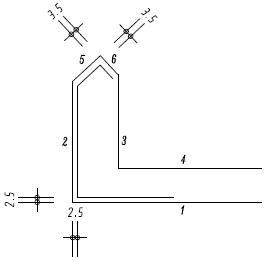
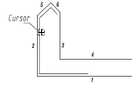
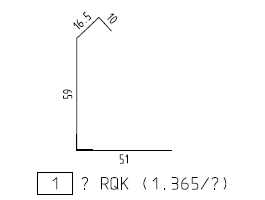

")

In manchen Situationen kann es sinnvoll sein, die Form des Stabes über Linien und Kreise vorzuzeichnen. Benutzen Sie hierzu den Linientyp [DURCHG]. Diese Form wird dann mit [ForGeo] exakt übernommen. Es muss sich dabei um ein Polygon handeln, welches nicht geschlossen sein darf. Die vorgezeichnete Geometrie kann zur Verlegung konvertiert werden, damit die Form nicht erneut verlegt werden muss. Um Auszüge zu kopieren, verwenden Sie die Funktion [ForKop].
1.Mattentyp und -biegerichtung wählen
§Wählen Sie in der Liste unter Mattentyp den gewünschten Formmattentyp oder bestätigen Sie die Vorauswahl mit der Eingabetaste.
§Geben Sie unter Biegerichtung an, wie die Formmatte gebogen werden soll und bestätigen Sie mit der Eingabetaste.
|
Die Formmatte wird über die Längsstäbe gebogen (Normalfall) |
|
Die Formmatte wird über die Querstäbe gebogen (Q-Matten) |


2.Geometriepolygon wählen
§Klicken Sie den Polygonzug an, aus dem die Biegeform abgeleitet werden soll.
Die zum Polygonzug gehörenden Linien werden markiert. Sie können die Auszugsform sofort absetzen.
3.Auszugsform ausrichten und setzen
§Auszugsform drehen/spiegeln (optional): Klicken Sie unter Lage Auszugsform auf  . Geben Sie die Werte für Drehung und Spiegelung an und bestätigen Sie jeweils mit der Eingabetaste.
. Geben Sie die Werte für Drehung und Spiegelung an und bestätigen Sie jeweils mit der Eingabetaste.
Dreh-Winkel: |
Drehung der Biegeform entgegen dem Uhrzeigersinn. (Mit negativem Wert wird im Uhrzeigersinn gedreht.) |
Winkel Spiegelachse: |
Drehung der Spiegelachse entgegen dem Uhrzeigersinn. |
§Setzen Sie die Biegeform per Mausklick an die gewünschte Stelle. [Lage Auszugsform].
Der Auszugstext wird im eingestellten Systemwinkel platziert.
|
Der Auszug wird orthogonal aus der Schalung in Bezug auf den Systemwinkel herausgezogen. Ob senkrecht oder waagerecht, richtet sich nach der Lage des Cursors. Bezugspunkt ist der Anfangspunkt. Liegt der Cursor in einem Sektor zwischen 315° und 45°, wird horizontal nach rechts bewegt, zwischen 225° und 315° nach unten usw. Alternativ: Halten Sie die Umschalttaste (Shift) beim Absetzen gedrückt. |
|
Die Lage des Auszuges wird von der Cursorposition bestimmt. Bezugspunkt ist der Anfangspunkt. |


4.Auszugstext definieren und anlegen
§Geben Sie unter Pos. eine Positionsnummer ein oder übernehmen Sie die Vorauswahl und bestätigen Sie mit der Eingabetaste.
§Um den Auszugstext zu drehen:
Verwenden Sie die Optionen unter Textrichtung oder geben Sie die Drehung in Grad (entgegen der Uhrzeigerrichtung) ein und bestätigen Sie mit der Eingabetaste.
|
Auszugstext parallel zu einem Bezugselement ausrichten. §Klicken Sie die Ausrichtungsoption an und klicken Sie anschließend das Bezugselement an. Bestätigen Sie mit Rechtsklick. Der Auszugstext wird parallel zum angeklickten Zeichenelement ausgerichtet. |
|
Auszugstext orthogonal zu einem Bezugselement ausrichten. §Klicken Sie die Ausrichtungsoption an und klicken Sie anschließend das Bezugselement an. Bestätigen Sie mit Rechtsklick. Der Auszugstext wird orthogonal zum angeklickten Zeichenelement ausgerichtet. |
|
Teillängentext neu positionieren. §Klicken Sie einen Teillängentext mit Linksklick an und positionieren Sie diesen an einer anderen Stelle. Der Auszugstext wird am Cursor als Vorschau angehängt. |


§Richten Sie den Auszugstext aus, indem Sie den gewünschten Winkel eingeben und bestätigen oder eine Konstruktionshilfe wählen. Der Auszugstext wird am Cursor als Vorschau angehängt. Wenn Sie die Position des Auszugstextes aus der Abfrage Lage Auszugsform beibehalten möchten, drücken Sie die Eingabetaste oder klicken Sie die rechte Maustaste.
5.Verlegung für Biegeform erzeugen
§Wählen Sie unter gewählt, ob mit der Biegeform eine Verlegung (Formdarstellung) gezeichnet werden soll:
|
Die Biegeform wird lediglich als Auszug (ohne Verlegung) gezeichnet. Sie kann als Vorlage für spätere Verlegungen verwendet werden. (Stückzahl und Durchmesser sind im Auszugstext mit ? belegt.) Die Bearbeitung ist abgeschlossen; Sie können sofort die nächste Biegeform (aus der Typentabelle) erzeugen. [Mattentyp]. |
|
Die Bewehrungsform wird mit Verlegung angelegt; Die Stückzahl muss im Folgenden definiert werden. Beachten Sie die Eingabeeinheit (vgl. Untere Menüleiste → Eingabe). §Geben Sie den Matten-Typ an oder wählen Sie einen Typ aus der Dropdown-Liste mit Linksklick aus. [Matten-Typ]. §Geben Sie die maximale Verlege- bzw. Mattenbreite, den Abstand zwischen den Matten sowie die Verlegetiefe an. Bestätigen Sie jeweils mit der Eingabetaste. Mit Rechtsklick können Sie den in der Eingabe stehenden Wert übernehmen. |
|
Die Biegeform wird mit Verlegung angelegt (Stückzahl = 0). Die Bearbeitung ist abgeschlossen; Sie können sofort die nächste Biegeform erzeugen oder die Form verlegen. [Mattentyp]. |


Beispiel:
Die zweite Form im Drempel ist bereits mit parallelen Linien vorgezeichnet.
 |
Geom. ElementKlicken Sie das Polygon an, wie in der Darstellung angezeigt. Lage AuszugsformLegen Sie den Auszug unterhalb der Schalung ab. |
 |
Pos.Bestätigen Sie den Vorschlagswert mit Rechtsklick. TextrichtungGeben Sie als Textrichtung 0 ein. |
 |
Lage AuszugsformPlatzieren Sie die Auszugsform unterhalb Form mit einem Linksklick. BiegerichtungBestätigen Sie mit Rechtsklick die Vorgabe 1 = Längsstäbe. Damit repräsentiert die Darstellung die Tragstäbe der Matte. gewählt:Wählen Sie 1 und führen Sie die Verlegung später aus. |